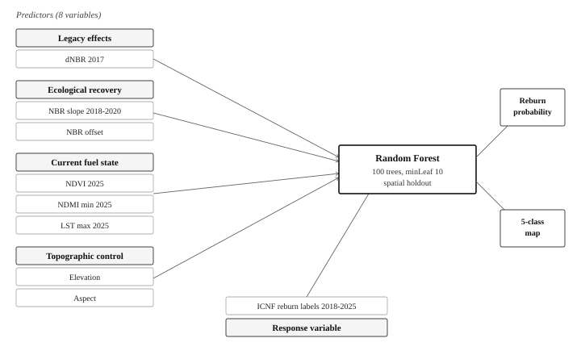

Pedrógão Grande Reburn Susceptibility Application
1 Project Summary
This project develops a Google Earth Engine application for policymakers and wildfire planners to assess reburn susceptibility within the 2017 Pedrógão Grande fire footprint in central Portugal. The model identifies which 100 m cells are most likely to reburn before the 2026 fire season by combining official fire perimeter data with remotely sensed indicators of initial burn severity, post-fire vegetation recovery, current fuel condition, and topographic controls. A Random Forest classifier is used to estimate reburn probability from these predictors, and the final application translates model outputs into interactive maps, municipality summaries, and click-based spatial diagnostics. The platform is intended to support operational prioritisation for fuel reduction and wildfire resilience planning.
1.1 Problem Statement
The application maps the distribution of re-ignition susceptibility in the affected area of the Great Pedrogan Fire in central Portugal in 2017. Using the flare-up boundary data from 2018 to 2025 provided by the Portuguese National Forest Service (ICNF), the application analyses the correlation between the severity of the fire, post-fire recovery, fuel status in 2025, surface temperature, and the topography and the spatial distribution pattern of the re-ignition. The application aims to support risk prioritisation before the 2026 fire season through an interactive and easy-to-understand interface.
1.2 End User
The main target user of the tool is AGIF, which is especially suitable for prioritising fuel reduction work in the affected area. The tool is also suitable for other stakeholders involved in post-fire management, who need to check the flammability distribution pattern, explore local predictor values, and understand the output of the model behind the map.
2 Data
| Category | Dataset | Description | Source |
|---|---|---|---|
| Custom asset | ICNF 2017 fire perimeter | Official 2017 summer fire polygons used to define the study footprint | Link |
| Custom asset | ICNF reburn perimeters 2018–2025 | Official post-2017 reburn polygons used to create binary reburn labels | Link |
| Custom asset | Predictor stack v2 | Precomputed 8-band predictor asset used by the deployed app | Link |
| GEE built-in | Sentinel-2 SR Harmonized | Surface reflectance imagery used to derive NBR, NDVI, and NDMI | Link |
| GEE built-in | Cloud Score+ S2 Harmonized | Pixel-quality layer used to retain relatively clear observations | Link |
| GEE built-in | Landsat 8 Level 2 | Surface temperature source for 2025 LST | Link |
| GEE built-in | Landsat 9 Level 2 | Surface temperature source for 2025 LST | Link |
| GEE built-in | Copernicus DEM GLO-30 | Elevation source used to derive elevation and aspect | Link |
| GEE built-in | FAO GAUL level 2 | Administrative boundaries used for municipality aggregation | Link |
3 Methodology
The application predicts reburn susceptibility inside the 2017 Pedrógão Grande wildfire footprint by combining official fire history with satellite-derived environmental predictors in a supervised machine learning workflow. The response variable is a binary reburn label created by intersecting ICNF fire perimeters from 2018–2025 with the 2017 fire footprint. Cells that burned again after 2017 are labelled as reburned, while cells inside the original footprint with no subsequent overlap are labelled as non-reburned. This design frames reburn as an observable post-fire spatial outcome rather than as a purely theoretical hazard class.
Predictor construction follows the logic that reburn likelihood should reflect both legacy effects of the 2017 fire and current fuel and site conditions. The first component is initial burn severity, represented by 2017 dNBR derived from pre-fire and post-fire Sentinel-2 imagery. The second component is ecological recovery, represented by an NBR recovery slope and offset estimated from annual summer imagery. Importantly, the slope is fitted only over 2018–2020 rather than over the full post-fire period, in order to reduce temporal leakage: if years that already contain reburn events are included in the fit, the recovery metric may partly reflect the outcome the model is trying to predict. The third component is current fuel condition in 2025, represented through NDVI, minimum summer NDMI, and maximum summer land surface temperature derived from Landsat 8 and Landsat 9. The final component is topographic control, represented by elevation and aspect from the Copernicus DEM.
An initial, broader predictor set was refined during model development. Two variables, slope and distance to settlement, were removed in the final version because they showed zero importance in the Random Forest model and did not materially improve validation performance. Their exclusion simplified the predictor stack without measurable loss of predictive skill. The final model therefore uses eight predictors: dNBR_2017, NBR_slope, NBR_offset, NDVI_2025, NDMI_2025_min, LST_2025_max, aspect, and elevation.
Model fitting is implemented using a Random Forest classifier in Google Earth Engine. A balanced stratified sample is drawn from reburn and non-reburn classes, and the classifier is trained using probability output for susceptibility estimation and classification output for discrete evaluation. Rather than using a conventional random split between training and validation data, the workflow adopts a spatial holdout design. One fire polygon, Pedrógão Grande, is reserved entirely for testing, while the remaining polygons are used for training. This is methodologically important because neighbouring pixels in remote sensing data are strongly spatially autocorrelated; a random split would therefore overestimate predictive skill by allowing very similar nearby pixels to appear in both training and test sets.
Model performance is assessed using AUC, Brier score, confusion matrices, accuracy, and kappa. Because the reburn class is relatively rare and the predicted probabilities are compressed into a low range, the final classification threshold is selected using Youden’s J statistic rather than a default threshold of 0.5. This provides a more defensible operating point for reporting categorical performance. To support interpretation, the workflow also computes binned partial dependence relationships for key predictors, especially NBR recovery slope and 2017 dNBR, which directly address the project’s substantive questions about recovery trajectory and severity legacy. The continuous reburn probability surface is then converted into a five-class susceptibility product using percentile-based breaks, and municipality-level summaries are derived to support policy-oriented prioritisation.

4 Interface
The website provides a map-based interface for exploring reburn susceptibility across the 2017 footprint. Users can switch between probability and classified susceptibility layers, inspect municipality-level summaries, and click individual locations to retrieve predictor values, probability scores, and local recovery trajectories. The application is intended to maintain scientific transparency while remaining legible to operational users, allowing both technical and policy-facing audiences to interpret the same model outputs.
5 The Application
5.1 Live App
5.2 Embedded App
## How It Works ### 1. Data Preparation and Precomputations To keep the application responsive, the most computationally expensive steps are prepared in advance. The workflow first assembles the 2017 fire footprint, derives reburn labels from the 2018–2025 ICNF polygons, and computes predictor layers from Sentinel-2, Landsat, and DEM inputs. These predictors are then exported as a dedicated Earth Engine asset (predictors_stack_icnf_v2) so that the app can load them directly without recomputing large image collections at runtime. Study Area & Labeling The study footprint is delineated by filtering official ICNF wildfire records from June to July 2017, focusing on high-magnitude events with an area $\ge 500$ ha. This temporal filter ensures alignment with the available satellite imagery window (August to October), effectively excluding late-season fires (e.g., October 2017) that lack immediate post-fire spectral data. The final Area of Interest (AOI) encompasses four primary fire polygons: Mação, Pedrógão Grande, Góis, and Abrantes. For model training, binary reburn labels are generated by intersecting the 2017 footprint with official fire perimeters recorded between 2018 and 2025. Areas exhibiting overlap are classified as 1 (reburn), while the remaining extent within the 2017 scars is classified as 0 (no reburn). This binary map serves as the ground-truth response variable for our predictive model. ```{.javascript style="max-height: 300px; overflow-y: auto;"} // - 2017 burn footprint from ICNF - // only Jun-Jul 2017 fires > 500 ha (Oct fires are after our post-fire imagery window) var burn_vector_2017 = ee.FeatureCollection(ICNF_2017_ASSET) .filter(ee.Filter.and( ee.Filter.gte('DH_Inicio', ee.Date('2017-06-01').millis()), ee.Filter.lt('DH_Inicio', ee.Date('2017-08-01').millis()), ee.Filter.gte('AreaHaPoly', 500) )); var aoi_burn = burn_vector_2017.geometry(); var aoi_buffered = aoi_burn.buffer(5000); // reburn labels: 1 where ICNF 2018-2025 intersects the 2017 footprint, else 0 var icnf_reburn = ee.FeatureCollection(ICNF_REBURN_ASSET).filterBounds(aoi_burn); var burned_after = ee.Image().byte() .paint(icnf_reburn, 1).unmask(0).clip(aoi_burn).rename('reburn'); print('polygons kept:', burn_vector_2017.size()); print('areas (ha):', burn_vector_2017.aggregate_array('AreaHaPoly'));Predictors
To model reburn susceptibility, we developed eight environmental predictors grouped into four thematic clusters:
- Initial Severity: dNBR_2017 represents the immediate post-fire impact, quantifying the magnitude of the 2017 burn.
- Recovery Dynamics: NBR_slope (regrowth rate) and NBR_offset (intercept) characterize the vegetation recovery trajectory.
- Current Fuel State (2025): Comprising NDVI_2025 (greenness), NDMI_2025_min (summer moisture stress), and LST_2025_max (surface temperature from Landsat 8/9).
- Topographic Control: Elevation and aspect modulate local microclimates and solar radiation intensity.
// - predictors -
function summerNBR(year) {
var nbr = s2_with_cs.filterDate(year + '-06-01', year + '-09-30')
.map(maskAndScale).map(addNBR).select('NBR').median();
return ee.Image.constant(year).toFloat().addBands(nbr).rename(['year','NBR']);
}
// slope fit 2018-2020: bulk Portuguese reburns happened in the 2022-2023 drought
var slopeYears = [2018, 2019, 2020];
var nbrSeries = ee.ImageCollection(slopeYears.map(summerNBR));
var recoveryFit = nbrSeries.reduce(ee.Reducer.linearFit());
var NBR_slope = recoveryFit.select('scale').rename('NBR_slope');
var NBR_offset = recoveryFit.select('offset').rename('NBR_offset');
var s2_2025 = s2_with_cs.filterDate('2025-06-01','2025-09-30')
.map(maskAndScale).map(addNBR).map(addNDMI).map(addNDVI);
var NDVI_2025 = s2_2025.select('NDVI').median().rename('NDVI_2025');
var NDMI_2025_min = s2_2025.select('NDMI').min().rename('NDMI_2025_min');
function landsatLST(img) {
var qa = img.select('QA_PIXEL');
var clear = qa.bitwiseAnd(1 << 3).eq(0).and(qa.bitwiseAnd(1 << 4).eq(0));
return img.select('ST_B10').multiply(0.00341802).add(149.0).subtract(273.15)
.updateMask(clear).rename('LST');
}
var L8 = ee.ImageCollection('LANDSAT/LC08/C02/T1_L2');
var L9 = ee.ImageCollection('LANDSAT/LC09/C02/T1_L2');
var LST_2025_max = L8.merge(L9)
.filterDate('2025-06-01','2025-09-30').filterBounds(aoi_burn)
.map(landsatLST).max().rename('LST_2025_max');
var dem = ee.ImageCollection('COPERNICUS/DEM/GLO30').mosaic().select('DEM').rename('elevation');
var terrain = ee.Terrain.products(dem);
// slope dropped: zero RF importance at 100 m (resampling smoothing)
var aspect = terrain.select('aspect').unmask(0).rename('aspect');
var elevation = dem.unmask(0);
// dist_settlement dropped in v2: zero RF importance at 100 m
// (rural footprint, uniform settlement distance, signal absorbed by elevation)
function clipLocal(img) { return img.clip(aoi_buffered); }Asset Exporting & Workflow Optimization
To optimize computational efficiency and ensure the application remains within Google Earth Engine’s memory limits, the finalized eight-band predictor stack is persisted as a static GEE Asset. This architectural modularity avoids redundant high-dimensional reductions during the interactive session.
Operational Toggle: The system implements a conditional switch, USE_ASSET, to manage data provenance. When enabled (true), the application prioritizes the pre-processed asset for near-instantaneous UI responsiveness. When disabled (false), the script utilizes the live computation pipeline, primarily for debugging or updates.
// Asset Management and Export Configuration
// Consolidate the eight thematic clusters into a single multi-band composite
var predictors_raw = ee.Image.cat([
clipLocal(dNBR_2017), clipLocal(NBR_slope), clipLocal(NBR_offset),
clipLocal(NDVI_2025), clipLocal(NDMI_2025_min), clipLocal(LST_2025_max),
clipLocal(aspect), clipLocal(elevation)
]);
Export.image.toAsset({
image: predictors_raw.toFloat(),
description: 'predictors_export_icnf',
assetId: ASSET_PATH,quarto render
region: aoi_burn, scale: GRID_SCALE, crs: TARGET_PROJ, maxPixels: 1e10
});
var predictors = USE_ASSET ? ee.Image(ASSET_PATH).clip(aoi_burn) : predictors_raw.clip(aoi_burn);
var label_100m = burned_after.clip(aoi_burn).rename('reburn');5.3 2. Interactive Visualization and Analysis
Once loaded, the app allows users to visualise reburn susceptibility as either a continuous probability surface or a five-class susceptibility product. Municipality overlays summarise mean reburn probability and the proportion of high-risk cells. Clicking on the map reveals local predictor values, the corresponding susceptibility estimate, and an NBR recovery trajectory for the selected location. This allows users to move between synoptic planning views and site-specific interpretation.
Robust Interaction
The UI implements robust validation logic to handle user input errors, such as clicking outside the 2017 fire footprint.
/**
* Map Click Handling & Validation
*/
Map.onClick(function(coords){
var point = ee.Geometry.Point([coords.lon, coords.lat]);
// Boundary Validation: Evaluate if point resides inside AOI
aoi_burn.contains(point, 1).evaluate(function(inside){
if (!inside) {
clickInfo.clear();
clickInfo.add(ui.Label('Click outside the 2017 burn footprint.', {
color: '#c00', fontSize: '11px', fontWeight: 'bold'
}));
eventSummaryCard.clear();
eventSummaryCard.add(ui.Label('Outside footprint — no summary.', {
color: '#c00', fontSize: '11px'
}));
return;
}
runPixelInspector(point, coords);
});
});Pixel Inspector Implementation
The inspector dynamically populates UI cards with predictor values and renders an 8-year vegetation recovery profile.
/**
* Pixel-Level Diagnostic Logic
*/
function runPixelInspector(point, coords) {
// 1. Identify Fire Polygon and Render Event Summary
perPolygonStats.filterBounds(point).first().evaluate(function(poly){
if (poly && poly.properties) {
var p = poly.properties;
var name = p.AreaHaPoly > 25000 ? 'Pedrógão Grande (Main)' : 'Fire Polygon';
eventSummaryCard.clear();
eventSummaryCard.add(ui.Label(name, {fontWeight:'bold', color: '#E65100'}));
eventSummaryCard.add(ui.Label('Polygon Area: ' + p.AreaHaPoly.toFixed(0) + ' ha'));
}
});
// 2. Sampling 8-Band Predictor Stack
var sample = predictors.addBands(reburnProb).reduceRegion({
reducer: ee.Reducer.first(), geometry: point, scale: 100
}).evaluate(function(res){
// Update labels in sidebar... (omitted styling for clarity)
});
// 3. Generate NBR Trajectory Chart (2018-2025)
var chart = ui.Chart.image.series({
imageCollection: nbrCol, region: point,
reducer: ee.Reducer.first(), scale: 100
}).setOptions({
title: 'Post-Fire NBR Recovery Trajectory',
vAxis: {title: 'NBR', viewWindow: {min: -0.2, max: 0.8}},
colors: ['#1a9850'], lineWidth: 2, pointSize: 4
});
chartPanel.add(chart);
}Municipality Aggregation
For administrative prioritisation, the app aggregates pixel-level susceptibility to the município level. Choropleth overlays are generated to display mean reburn probability and the proportion of high-risk cells within each administrative boundary. To maintain performance and avoid concurrency errors, a batch reduceRegions approach is implemented.
/**
* Municipality-Level Statistics Aggregation
*/
var municipalitiesAll = ee.FeatureCollection('FAO/GAUL/2015/level2')
.filter(ee.Filter.eq('ADM0_NAME','Portugal'));
var municipalities = municipalitiesAll.filterBounds(aoi_burn);
var highMask = reburnClass.gte(4).rename('high_mask');
// batch reduceRegions avoids "too many concurrent aggregations" tile errors
var muniIntersected = municipalities.map(function(f){
var inside = f.geometry().intersection(aoi_burn, 10);
return f.setGeometry(inside).set('area_in_burn_ha', inside.area(1).divide(10000));
}).filter(ee.Filter.gt('area_in_burn_ha', 10));
var muniStats = reburnProb.addBands(highMask).reduceRegions({
collection: muniIntersected,
reducer: ee.Reducer.mean(),
scale: 100, crs: TARGET_PROJ, tileScale: 16
}).map(function(f){
return f.set('mean_reburn_prob', f.get('reburn_prob'))
.set('pct_high_class', f.get('high_mask'));
});
var muniChoroprob = ee.Image().float()
.paint({featureCollection: muniStats, color:'mean_reburn_prob'})
.updateMask(ee.Image().byte().paint(muniStats, 1));
var muniChoropct = ee.Image().float()
.paint({featureCollection: muniStats, color:'pct_high_class'})
.updateMask(ee.Image().byte().paint(muniStats, 1));
var muniOutline = ee.Image().byte()
.paint({featureCollection: muniStats, color: 1, width: 2}).selfMask();
// cached per-polygon stats for summary popups on click
var perPolygonStats = reburnProb.addBands(highMask).reduceRegions({
collection: burn_vector_2017,
reducer: ee.Reducer.mean(),
scale: 100, crs: TARGET_PROJ, tileScale: 16
});5.4 3. Insights and Objectives
The application is designed to support wildfire planning before the 2026 fire season by identifying where reburn is most likely within the 2017 footprint. It is particularly intended to help with spatial prioritisation of fuel treatments, comparison across municipalities, and interpretation of the ecological mechanisms associated with reburn risk, including the role of severity legacy, vegetation recovery, and current fuel stress.
6 Limitations
The current version is a static susceptibility application rather than a dynamic forecasting system. It does not yet incorporate short-term meteorological drivers, suppression history, or explicit management-treatment data. Municipality aggregation is useful for operational summarisation but remains coarser than the underlying 100 m susceptibility surface. Future development could include seasonal updates, dynamic weather inputs, scenario-based treatment testing, and exportable reports for decision support.
7 References
-待补充 -待补充